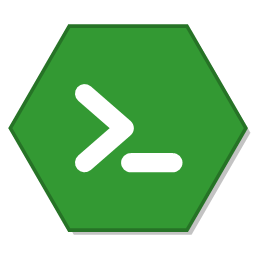

NodeStart
Node.js piloté par Docker, sans prise de tête
Images Docker
Mes projets
Vérification des prérequis...
Revérifier
Images Node.js installées (pull Docker)
Rafraîchir
Installer une version
Versions courantes affichées par défaut
Mes projets
+ Ajouter un projet
← Retour aux projets
Projet
Statut inconnu
Image Node.js
▶ Démarrer
■ Arrêter
⟳ Redémarrer
⇅ Sync le dossier
Ouvrir le dossier
Retirer le projet
Console
Ajouter un projet
Nom du projet
Chemin du projet
Parcourir
Image Node.js (Docker)
Annuler
Ajouter
Téléchargement de l'image
Fermer